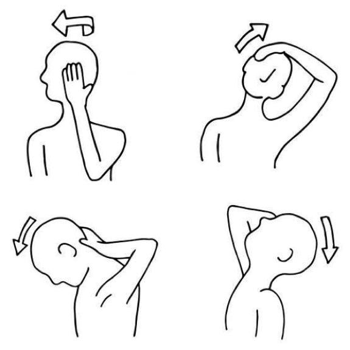

Welcome!
a
a

I am a Developer. I work at CloudyPedia
Self exercise about Neck. You can do this while seated or standing
1- Keep your head squarely over your shoulders and your back straight.
2- Slowly turn your head to the right until you feel a stretch in the side of your neck and shoulder.
3- Hold the stretch for 15-30 seconds, and then slowly turn your head forward again.
4- Repeat on your left side.
